正想走近黑色石灘上的燈塔, 雨粉越來越密, 天氣漸漸轉差, 並開始下起雨來, 便立即跑回防波堤上的涼亭下避雨。過了一會, 雨勢稍為緩和了一些, 便繼續步行往 IRIS 拍攝場地的白色燈塔。
按地圖所示, 沿防波堤旁的偶來4號小路便可到達IRIS 拍攝場地的白色燈塔, 但天雨關係, 並不好走, 便改為沿馬路的偶來4號小路走去。
離開表善防波堤及表善漁港, 沿馬路的偶來4號小路繼續向前走。
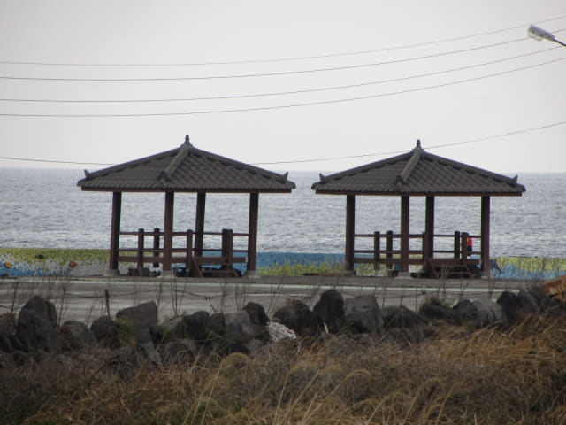
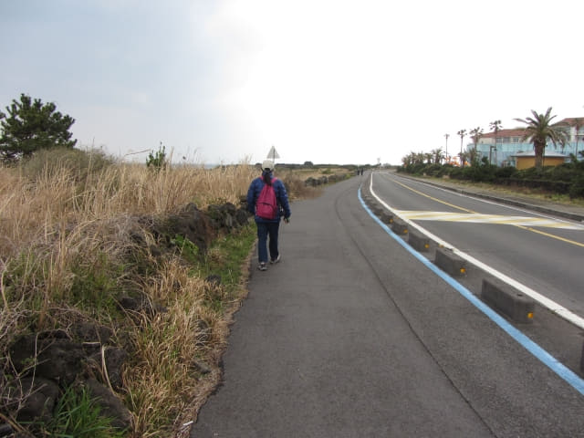
這裡可看到下面的偶來4號小路, 好像出現積水, 有點像沼澤, 肯定十分難行, 走馬路這段偶來小路絕對是正確的選擇。
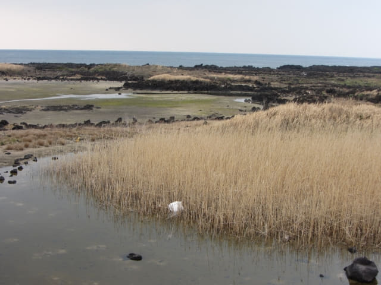
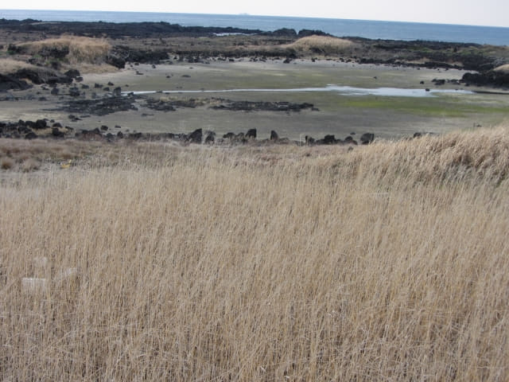
岸邊的岩石不時濺起高高的浪花。
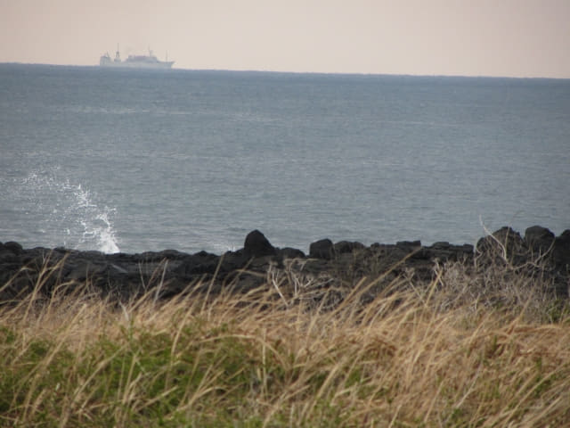
經過海女像。
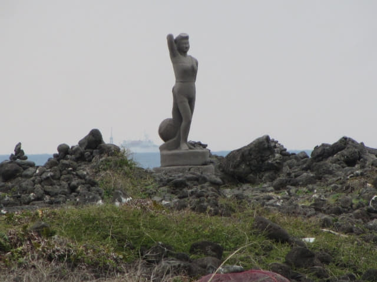
白色燈塔 韓劇 IRIS 拍攝場地
白色燈塔 韓劇 IRIS 拍攝場地
韓國電視劇《IRIS》最後一幕中, 勝熙(金泰熙飾)在這裡等待賢俊 (李秉憲飾)的地方。在燈塔下戴著耳機的勝熙, 看不到不遠處中槍的愛人, 在垂死掙扎中迷茫的凝望著他。
走了一會, 又下起雨來, 便撐傘繼續往前走。在一條小徑轉左朝海邊走, 便來到韓劇 IRIS 拍攝場地的白色燈塔。驟眼一看, 真的有些像剛才表善漁港黑色石灘上的白色燈塔。
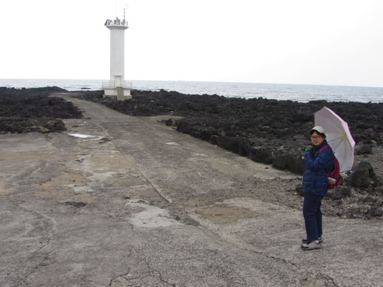
既下雨, 風又大, 沒法再走近燈塔, 恐怕濕透身, 就在這裡欣賞算了!
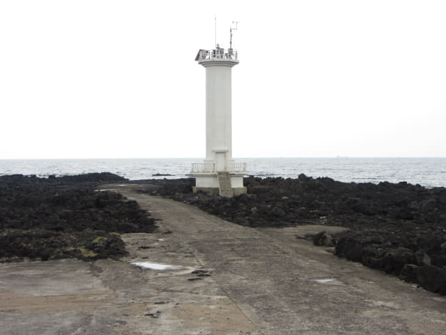
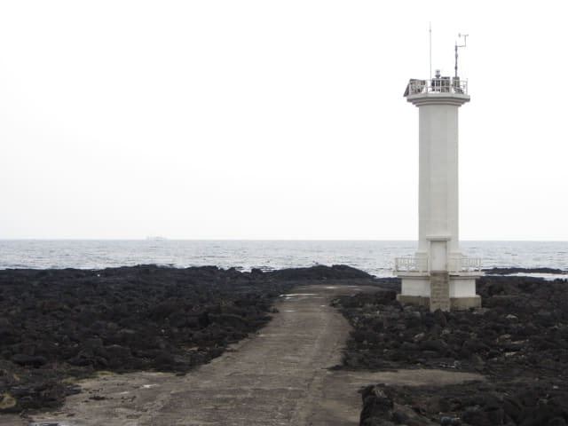
真佩服海女, 無懼風雨巨浪, 繼續在海中捕獲海產。
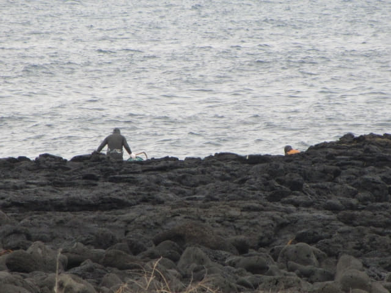
遊覽完韓劇 IRIS 拍攝場地的白色燈塔, 匆匆離開, 經過一個洗手間, 看見雨勢越來越大, 便各自走進所屬單位去避雨, 打算等雨勢稍緩才離開。
男洗手間尚算清潔, 只是有少許異味, 但不到一分鐘, 聽到她在外面大聲叫喊, 便立即走出去看發生什麼事, 原來女洗手間骯髒不堪, 夜來香堆積如山, 臭氣沖天, 無法忍受。
沒辦法, 唯有冒雨離開。
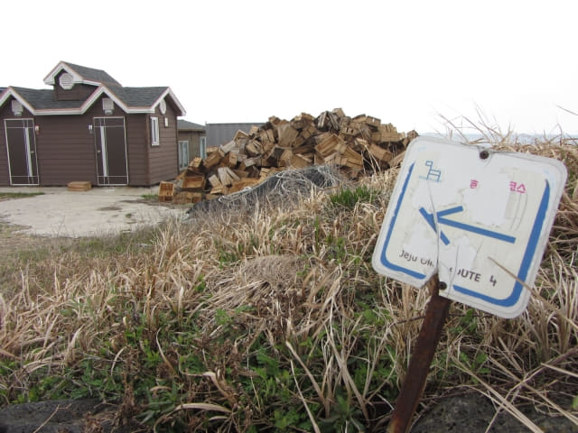
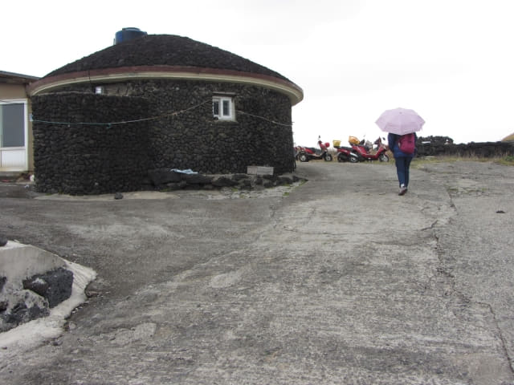